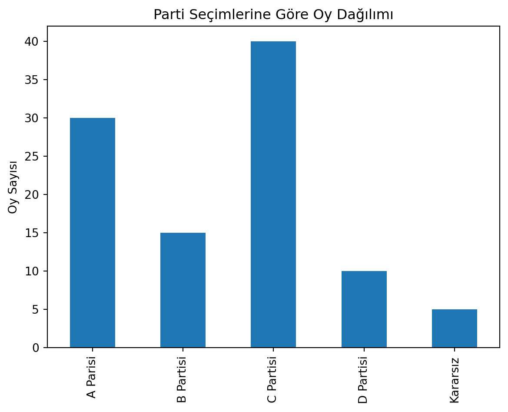
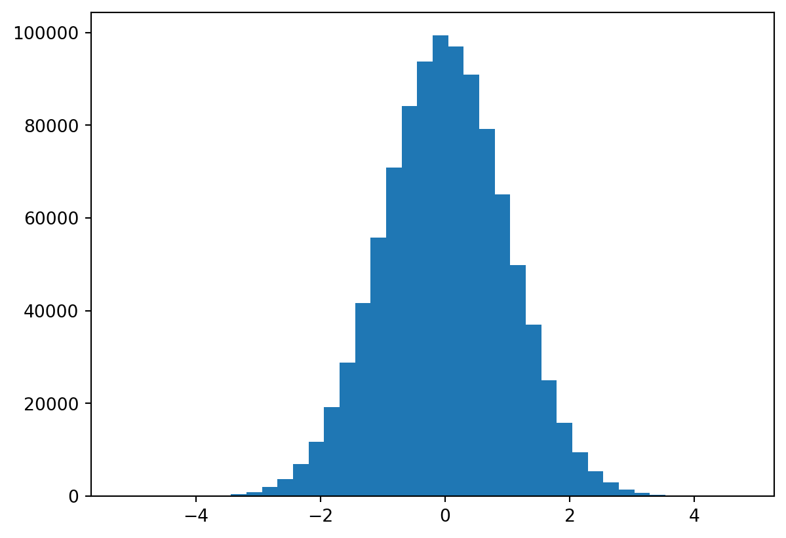

İstatistiksel analizler için gerekli modüller: scipy.stats, scipy.optimize, numpy. Yardımcı modüller ise matplotlib.pyplot, pandas, seaborn.
İstatistikteki Temel Tanımlar
Popülasyon (Population): Bir nesnenin tüm özelliklerini belirlemek için seçilen örneklerdir.
Örneklem (Sample): Bir nesnenin özelliklerini belirlemek için seçilen örneklerdir.
Belirsizlik (Uncertainty): Örneklem veya popülasyonun özelliklerini belirlemek için kullanılan örneklerin sayısının yetersiz olmasıdır.
Veri (Data): Bir araştırma veya analiz için toplanan sayısal veya kategorik bilgilerdir.
Ortalama (Mean) : Veri setinin tüm değerlerinin toplamının, veri setindeki eleman sayısına bölünmesiyle elde edilir.
Medyan veya Ortanca Değer (Median): Veri setindeki değerlerin ortalamasına göre sıralandıktan sonra ortadaki değerdir.
Mod veya Tepe Değer (Mod): Veri setindeki en sık tekrar eden değerdir.
Varyans (Variance) : Veri setindeki değerlerin ortalama değere ne kadar dağıldığını ölçen bir istatistiksel ölçüdür.
Standart Sapma (Standard Deviation): Veri setindeki değerlerin ortalama değerden ne kadar sapma gösterdiğini gösteren bir ölçüdür.
Çeyrekler (Quartiles): Veri setindeki değerlerin sıralanmasından sonra ortadaki değer orta çeyreklik, orta çeyreklik ile en küçük değerin ortasındaki değer alt çeyreklik (%25), orta çeyreklik ile en büyük değerin ortasındaki değer üst çeyreklik (%75) olarak tanımlanır.
Minimum ve maksimum değer (Minimum and Maximum): Veri setindeki en küçük ve en büyük değerlerdir.
Alıştırma 1
Bir araştırmada seçimlerdeki oy dağılımı tahmin edilmek istenmektedir. Toplamda 1000 kişi oy vereceğini düşünelim. Anket şirketi de 100 kişiye sormuş. Bu 100 kişinin oy dağılımı şu şekilde:
A Partisi
B Partisi
C Partisi
D Partisi
Kararsız
30
15
40
10
5
Çözüm
import pandas as pdimport numpy as np# Veri setidf= pd.Series({'A Parisi':30,'B Partisi':15,'C Partisi':40,'D Partisi':10,'Kararsız':5})# Çizdf.plot(kind='bar', title='Parti Seçimlerine Göre Oy Dağılımı', ylabel='Oy Sayısı')# Pandas açıklamaprint(df.describe())
count 5.00000
mean 20.00000
std 14.57738
min 5.00000
25% 10.00000
50% 15.00000
75% 30.00000
max 40.00000
dtype: float64

Yukarıdaki tanımları uygulayalım.
Popülasyon: 1000
Örneklem: 100
Örneklem Adeti: 1
Belirsizlik: 900
Veri: 100
30 A Partisi, 15 B Partisi, 40 C Partisi, 10 D Partisi, 5 Kararsız
Varyans (Veri-Ortalamaya-Yakın): 2.0
Standart Sapma (Veri-Ortalamaya-Yakın): 1.4142135623730951
pandas içerisinde describe() fonksiyonu ile belirlenen değerleri numpy paketi ile de belirleyebiliriz.
import numpy as npveri= np.array([30., 15., 40., 10., 5.])print(f"Ortalama: {veri.mean()}")print(f"Varyans: {veri.var()}")print(f"Standart Sapma: {veri.std()}")print(f"Medyan: {np.median(veri)}")print(f"Minimum ve Maksimum: {veri.min()} ve {veri.max()}")print(f"Çeyrekler: {np.percentile(veri, [25, 50, 75])}")
Ortalama: 20.0
Varyans: 170.0
Standart Sapma: 13.038404810405298
Medyan: 15.0
Minimum ve Maksimum: 5.0 ve 40.0
Çeyrekler: [10. 15. 30.]
Burada pandas ile numpy modüllerinin standart sapma (varyans) değerleri aynı değil. Bunun sebebi istatistikte “yanlı/yansız (biased/unbiased)” olarak bilinen iki farklı yaklaşım vardır. Bu iki yaklaşımın farklılıkları için aşağıdaki linkleri inceleyebilirsiniz.
TL;DR - Popülasyon üzerinden hesap yapmak istiyorsanız yanlı yaklaşımı, df.std(ddof=0) veya np.std() kullanın. - Örneklem üzerinden hesap yapmak istiyorsanız yansız yaklaşımı df.std() veya np.std(ddof=1) kullanın.
Rastgele Sayılar
Önce numpy modülü içerisindeki random paketi ile rastgele sayılar üretelim.
np.random.rand(N): \([0,1)\) arasında düzgün olarak (uniformly) N boyutlu rastgele sayı üretir.
np.random.randn(): \(N(0,1)\) arasında standart normal dağılımlı olarak (standard normal distribution) rastgele sayı üretir.
np.random.randint(a,b): \([a,b)\) arasında düzgün olarak (uniformly) rastgele sayı üretir.
import numpy as npprint(f"5 Boyutlu düzgün dağılımlı rastgele sayılar: {np.random.rand(5)}")print(f"5 Boyutlu normal dağılımlı rastgele sayılar: {np.random.randn(5)}")print(f"5 boyutlu 0 ile 10 arasında rastgele tam sayılar: {np.random.randint(0, 10, 5)}")
5 Boyutlu düzgün dağılımlı rastgele sayılar: [0.82087207 0.34266741 0.10990511 0.2315717 0.03972704]
5 Boyutlu normal dağılımlı rastgele sayılar: [ 0.59914335 0.73342352 0.61441675 -1.0207175 1.10799039]
5 boyutlu 0 ile 10 arasında rastgele tam sayılar: [1 5 4 1 7]
Standart normal dağılımı rastgele sayı üreteci 0’ın ortasında ve 1’in standart sapması olan bir dağılım oluşturur. Bu dağılımın özelliklerini görmek için aşağıdaki kodu çalıştırın.
import numpy as npimport matplotlib.pyplot as plt# 1000 tane rastgele sayı üret#x = np.random.randn(1000)x = np.random.randn(1_000_000)# Histogram çizplt.hist(x, bins=40)plt.show()plt.close()

import numpy as npimport matplotlib.pyplot as plt# Rastgele sayı üret [0,1)print(np.random.rand())# Rastgele 5 tane sayı üret [0,1)print(np.random.rand(5))# Rastgele 2x4 matris üret [0,1)print(np.random.rand(2, 4))print("-"*20)# Rastgele Normal dağılımlı sayı üretprint(np.random.randn(10))print("-"*20)# Rastgele tam sayı üret [0,10)print(np.random.randint(0, 10))# Rastgele 5 tane tam sayı üretprint(np.random.randint(0, 10, 5))# print(np.random.randint(low=0, high=10, size=5))# Rastgele 2x4 matris üret [0,10)print(np.random.randint(0, 10, (2, 4) ))#print(np.random.randint(low=0, high=10, size=(2,4)))# Çizfig, axes = plt.subplots(3,1)axes[0].hist(np.random.rand(10_000))axes[0].set_title("rand")axes[1].hist(np.random.randn(10_000))axes[1].set_title("randn")axes[2].hist(np.random.randint(low=1, high=10, size=10_000), bins=9, align='left')axes[2].set_title("randint(low=1, high=10)")plt.tight_layout()
İlerleyen bölümlerde belli bir array’den rastgele bir eleman seçmek isteyeceğiz. Bunun için np.random.choice() özelliğini kullanacağız. Eğer replace=False özelliği ile kullanırsak seçilen eleman tekrar seçilemez. Varsayılan özellik replace=True’dur.
Rastgele sayı seçiminde çekirdek (seed) seçimi de önemli bir faktördür çünkü rastgelelik bir çekirdek üzerinden oluşur. Aynı çekirdek ile “aynı rastgelelik” oluşur.
Bizim çalışacağımız problemlerde çekirdek seçimi önemli olmayacaktır ancak oyun, simülasyon gibi problemlerde çekirdek seçimi önemli olabilir.
Çekirdek seçimi için np.random.seed() fonksiyonunu kullanılır.
Belirlenen bir çekirdek üzerine seçimler yapmak için aşağıdaki gibi bir rastgele durum belirlenir.
import numpy as npoyunHaritasi= np.random.RandomState(42)print(oyunHaritasi.randint(0, 10, 4))print("-"*20+"1")print(oyunHaritasi.rand(5))
Popülasyondan rastgele seçilen örneklem üzerinden yapılan istatistiksel incelemelerde, örneklem dağılımının popülasyon dağılımına yakın olması istenir. Bu ve benzeri konular için matematikte olasılık teorisi bulunmaktadır.
Örnek Uzayı (Sample Space): Bir deneyin tüm olası sonuçlarının bir kümesidir.
Örnek uzaydaki tüm elemanlar için bir olasılık değeri vardır.
Olasılık Dağılımı (Probability Distribution): Bir deneyin tüm olası sonuçlarının olasılıklarının bir dağılımıdır.
Rastgele Değişken (Random Variables): Bir deneyin sonucu olarak elde edilen değerlerdir.
Rastgele değişkenlerin birbirinden bağımsız olması gerekir.
Örneğin
Bir paranın örnek uzayı \(\{Yazı,Tura\}\)’dır.
Rastgele değerleri \(\{0,1\}\)’dir.
İstatistiksel işlemler kullanmak için rastgele değişkenlerin olasılık dağılımlarına ihtiyacımız vardır.
Rastgele değişkenler alacağı olası değerler ile karakterize edilir ve bu değerler de olasılık dağılımına göre belirlenir.
En temelde iki çeşit dağılım vardır. 1. Kesikli Dağılımlar, Tam Sayılar (Discrete Distributions) 2. Sürekli Dağılımlar, Gerçel Sayılar (Continuous Distributions)
scipy.stats modülü içerisindeki rv_discrete ve rv_continuous sınıfları ile dağılımların özelliklerine ulaşabiliriz. Bu paketteki metotlar ve açıklamaları için dokümantasyon sayfasına veya Numerical Python kitabında tablo 13-1’e bakabilirsiniz.
Ortalama: 1.0
Median: 1.0
Standart Sapma: 0.5
Varyans: 0.25
Problemler
Problem 1
100 adet parayı 1000 kere atan ve np.random.rand() fonksiyonu kullanan bir betik dosyası yazın. Her atıldığında 100 tane paranın kaç tanesi tura geldiğini kaydedin ve sonucu histogram grafiği olarak çizdirin.
Problem 2
Uygulama 1 ile verilen betik dosyasını np.random.choice() fonksiyonu kullanarak yapın.
Problem 3
100 adet zarı 1000 kere atan ve np.random.choice() fonksiyonunu kullanan bir betik dosyası yazın. Her atıldığında 100 tane zarın kaç tanesinin 6 geldiğini, kaç tanesinin 5 geldiğini vs. kaydedin ve sonucu histogram grafiği olarak çizdirin.
Numerical Python: Scientific Computing and Data, Science Applications with Numpy, SciPy and Matplotlib, Robert Johansson, Apress, İkinci Basım, 2019, syf 443